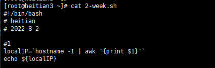
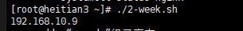
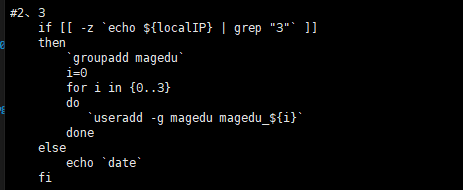
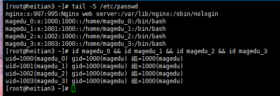
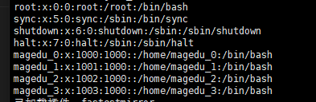
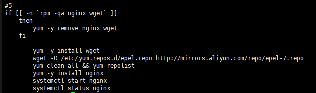
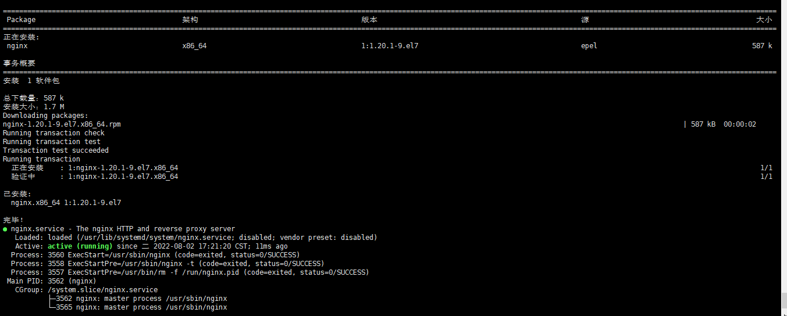

2-week
完成一个shell脚本，脚本的作用。
1. 运行脚本可以显示出本机的ip地址


2. 如果ip地址中有3这个数字，那么就打印出当前的系统时间

3. 如果ip地址中不含3这个数字，就批量建立用户magedu_00, magedu_01, … magedu_100并且所有用户同属于magedu组

4. 打印出/etc/passwd这个文件中可以登陆的用户（非/usr/sbin/nologin）

5. yum安装nginx服务，并且启动该服务


完整脚本
#!/bin/bash
# heitian
# 2022-8-2
#1
localIP=`hostname -I | awk '{print $1}'`
echo ${localIP}
#2、3
if [[ -z `echo ${localIP} | grep "3"` ]]
then
`groupadd magedu`
i=0
for i in {0..3}
do
`useradd -g magedu magedu_${i}`
done
else
echo `date`
fi
#4
grep -v "/sbin/nologin" /etc/passwd
#5
if [[ -n `rpm -qa nginx wget` ]]
then
yum -y remove nginx wget
fi
yum -y install wget
wget -O /etc/yum.repos.d/epel.repo http://mirrors.aliyun.com/repo/epel-7.repo
yum clean all && yum repolist
yum -y install nginx
systemctl start nginx
systemctl status nginx
本博客所有文章除特别声明外，均采用 CC BY-SA 4.0 协议 ，转载请注明出处！